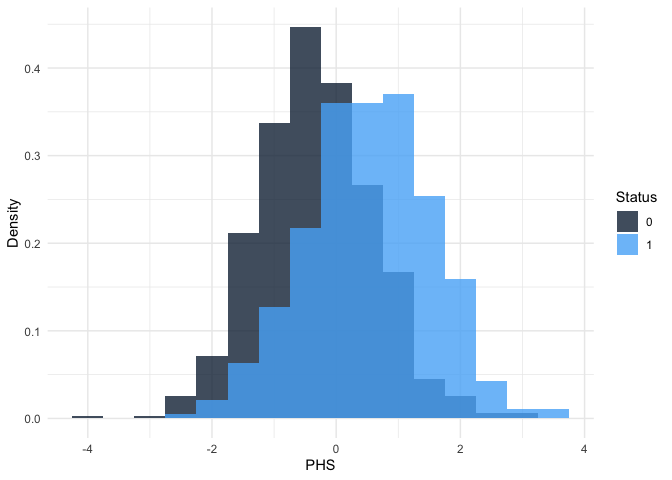
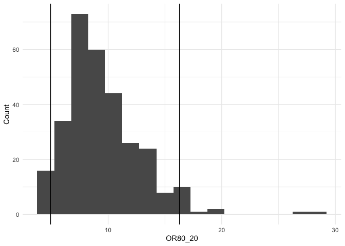

The goal of hazrd is to simplify and standardize the development and testing of polygenic hazard score models in an opinionated way based mainly on past work in the PHS repo. Currently, most of the functionality focuses on external validation of PHS models. This includes calculation of standard statistics (80-20 hazard ratios, 80-20 odds ratios, and concordance index) and plotting of Kaplan-Meier curves and cumulative incidence curves. In the future, this will be expanded to model development, internal validation, imaging risk scores, multimodal hazard scores, and functions related to Digital Avatar.
Installation
Github
To install the most recent release from Github, go to the release page, scroll down to Assets, and download the “Source code (tar.gz)” file. Then, in R, run:
install.packages("hazrd-0.1.0.tar.gz", repos = NULL, type="source")Using devtools
For a more up-to-date installation with all of the changes since the last release, install the development version of hazrd from GitHub by cloning the repository:
and then opening R and installing the package:
devtools::install("hazrd")Replace "hazrd" with the path to the repository on your local computer.
On a remote cluster
To install the development version on a remote cluster, such as TSD, build a tarball from your local clone of the Github repo:
devtools::build("hazrd")You can then install the .tar.gz with install.packages in R:
install.packages("hazrd_0.1.0.tar.gz", repos = NULL, type="source")Getting Started
First, generate some test data. Here, we are using a simulated dataset that is included with the hazrd package.
## phs age status
## 1 0.8425735 67.95011 1
## 2 1.1151321 56.31356 0
## 3 -0.3777455 72.94103 1
## 4 0.1201511 82.01571 1
## 5 -0.4041602 74.33629 1
## 6 -0.4531890 77.15814 1Next, plot the histogram of PHSes by case/control status.
phs_hist(test_data, normalize = TRUE)
Then, calculate the hazard ratio comparing the mean of the top 20% of PHSes to the mean of the bottom 20% (i.e., HR80_20). We can also generate 95% confidence intervals using bootstrapping.
## List of 5
## $ index : chr "HR80_20"
## $ value : num 8.17
## $ conf.low : num 5.99
## $ conf.high: num 11.4
## $ iters : num [1:300, 1] 8.35 9.71 8.24 10.2 8.54 ...Each get_ function also returns the output from each bootstrap iteration in $iters so that the user can plot these or calculate their own confidence intervals:
ggplot(mapping = aes(x = HR80_20$iters)) +
geom_histogram(binwidth = 2/3) +
geom_vline(xintercept = HR80_20$HR, color = "red") +
geom_vline(xintercept = HR80_20$conf.low) +
geom_vline(xintercept = HR80_20$conf.high) +
theme_minimal() +
labs(x = "HR80_20", y = "Count")
Similarly, calculate the odds ratio at age 70 between the top 20% and bottom 20% of PHSes.
## List of 6
## $ index : chr "OR80_20"
## $ value : num 8.52
## $ conf.low : num 4.92
## $ conf.high: num 16.3
## $ age : num 70
## $ iters : num [1:300, 1] 7.37 11.7 15.78 9.29 6.26 ...
ggplot(mapping = aes(x = OR80_20$iters)) +
geom_histogram(binwidth = 3/2) +
geom_vline(xintercept = OR80_20$OR, color = "red") +
geom_vline(xintercept = OR80_20$conf.low) +
geom_vline(xintercept = OR80_20$conf.high) +
theme_minimal() +
labs(x = "OR80_20", y = "Count")
Return the concordance index with 95% confidence intervals from a coxph fit:
c_index = get_cindex(test_data, CI = TRUE, boot = 300)
str(c_index)## List of 5
## $ index : chr "C_Index"
## $ value : num 0.708
## $ conf.low : num 0.683
## $ conf.high: num 0.731
## $ iters : num [1:300, 1] 0.703 0.722 0.752 0.703 0.721 ...Finally, plot the Kaplan-Meier curves with confidence intervals for centiles of interest.
curves = data.frame(curve0_20 = c(0, 0.2),
curve20_70 = c(0.2, 0.7),
curve80_98 = c(0.8, 0.98),
curve98_100 = c(0.98, 1.0))
label_generator = function(x, y) {
x = x * 100
y = y * 100
out = paste0("PHS ", x, "-", y, "th centile")
return(out)
}
km_curves = data.frame()
for (i in seq_len(length(curves))) {
curven <- km_curve(data = test_data,
interval = curves[[i]],
age_range = 40:100,
scale = FALSE,
inverse = FALSE)
curven$label = label_generator(curves[1, i], curves[2, i])
km_curves = rbind(km_curves, curven)
}
ggplot(km_curves, aes(x = time,
y = estimate,
ymin = conf.low,
ymax = conf.high,
col = label,
fill = label)) +
geom_ribbon(alpha = 0.1,
color = 0) +
geom_step() +
theme_minimal() +
xlim(40, 100) +
ylim(0, 1) +
labs(x = "Age", y = "Disease-free Survival") +
scale_color_brewer(palette = "Set1",
name = "Centile") +
scale_fill_brewer(palette = "Set1",
name = "Centile")## Warning: Removed 15 rows containing missing values or values outside the scale range
## (`geom_step()`).
Individual Prediction
It is possible to generate a lookup table to perform individual prediction on a new, un-observed individual for which we have calculated a PHS score. To do this, we fit the model using our data and generate predicted curves for each of 99 percentiles (1 to 99%). We then output these curves with their associated PHS score at each percentile. This removes any connection to the subject-level data so is safe to export from secure computing platforms. We can then plot the prediction for the closest percentile to the new individual’s PHS
Future work will be to implement a way of interpolating the curve for a subject that is between two percentiles. In addition, work should be done to perform smoothing of the curve using the baseline hazard function rather than outputing a K-M curve for that individual. This will improve the interpretability of the individual prediction since risk isn’t likely to suddenly drop-off at a particular age, but should be an exponential function.
Here is an example workflow:
# Create the lookup table (on a secure computing platform using
# individual-level data)
lookup_table = create_lookup_table(test_data)Export that lookup table from the computing platform and then identify the percentile for a new subject. Based on this toy dataset, a subject with a PHS of 1.6 would be approximately in the 94th percentile. Here, I plot the predicted curve for the median percentiel (50%) with a gray shaded area for the confidence intervals, an individual line for every percentile from 1 to 99, and I have highlighted in red the predicted risk curve and confidence intervals for the “new” hypothetical subject with a PHS of 1.6 (94th percentile):
ggplot(lookup_table[lookup_table$percentile == 0.50, ],
aes(x = time, y = surv, ymin = lower, ymax = upper)) +
geom_line() +
geom_ribbon(alpha = 0.5) +
theme_classic() +
geom_line(aes(x = time, y = surv, group = percentile), data = lookup_table, alpha = 0.1) +
geom_line(aes(x = time, y = surv, group = percentile),
data = lookup_table[lookup_table$percentile == 0.94, ],
color = "red") +
geom_ribbon(aes(x = time, y = surv, ymin = lower, ymax = upper),
data = lookup_table[lookup_table$percentile == 0.94, ],
alpha = 0.5, fill = "red") +
labs(x = "Age", y = "Disease-free Survival")
Example Script
Here is an example script to run the entire hazrd analysis from the command line:
#########################################
# First argument: PHS file
# tab delimited file, with or without header, first column ID, second column PHS score
# file basename used as prefix for output
#
# Second argument: metadata file
# tab delimited file with or without header, first column id, second column age,
# third column status (0 or 1). Additional columns will be ignored.
#
# Third argument:
# boolean (i.e., TRUE or FALSE) indicating whether to inverse (x * -1) the PHS scores
# to reverse the direction of effect.
#
# Fourth argument:
# path to output directory, e.g., "reports/"
# if the directory does not exist it will be created
########################################
# Load packages
library(hazrd)
library(ggplot2)
#######################################
# parse arguments
args = commandArgs(trailingOnly=TRUE)
model_file = args[1] # PHS file
# model = gsub("\\_.*","", basename(args[1])) # filename for output
model = gsub("\\..*","", basename(args[1])) # filename for output
metadata = read.table(args[2], col.names = c("id", "age", "status")) # Phenotype data
inverse = args[3]
output = args[4]
#########################################
# Import PHS data
phs = read.table(model_file, col.names = c("id", "phs"))
print(head(phs))
phs$phs = scale(phs$phs, center = TRUE, scale = TRUE)
if (inverse) {phs$phs = phs$phs * -1}
combined_data = merge(metadata, phs, by = "id")
combined_data = combined_data[!(is.na(combined_data$phs)), ]
#########################################
# Analyze PHS data
# PHS Histogram
phs_hist =
phs_hist(combined_data, normalize = TRUE) +
labs(title = model) + theme(aspect.ratio=1)
ggsave(paste0(output, model, "_hist.png"), phs_hist,
units = "px", height = 1300, width = 1300, create.dir = TRUE)
# Performance metrics
HR80_20 = get_hr(combined_data, CI = TRUE, boot = 300)
ages = c(60, 70, 80)
OR80_20 = lapply(ages, function(x) {get_or(combined_data, or_age = x, CI = TRUE, boot = 300)})
c_index = get_cindex(combined_data, CI = TRUE, boot = 300)
HR80_20$age = NA
c_index$age = NA
indices = list(HR80_20, OR80_20[[1]], OR80_20[[2]], OR80_20[[3]], c_index)
perform = do.call(rbind.data.frame, lapply(indices, function(x){data.frame(index = x$index,
value = x$value,
conf.low = x$conf.low,
conf.high = x$conf.high,
age = x$age)}))
perform = cbind(model, perform)
write.table(perform, paste0(output, model, "_performance.tsv"), sep = "\t", row.names = FALSE)
# KM Curves
curves = data.frame(curve0_20 = c(0, 0.2),
curve20_70 = c(0.2, 0.7),
curve80_98 = c(0.8, 0.98),
curve98_100 = c(0.98, 1.0))
label_generator = function(x, y) {
x = x * 100
y = y * 100
out = paste0("PHS ", x, "-", y, "th centile")
return(out)
}
km_curves = data.frame()
for (i in seq_len(length(curves))) {
curven <- km_curve(data = combined_data,
interval = curves[[i]],
age_range = 40:100,
scale = FALSE,
inverse = FALSE)
curven$label = label_generator(curves[1, i], curves[2, i])
km_curves = rbind(km_curves, curven)
}
km_curve = ggplot(km_curves, aes(x = time,
y = estimate,
ymin = conf.low,
ymax = conf.high,
col = label,
fill = label)) +
geom_ribbon(alpha = 0.1,
color = 0) +
geom_step() +
theme_minimal() +
xlim(40, 100) +
ylim(0, 1) +
labs(x = "Age", y = "Disease-free Survival", title = model) +
scale_color_brewer(palette = "Set1",
name = "Centile") +
scale_fill_brewer(palette = "Set1",
name = "Centile") + theme(aspect.ratio=1)
ggsave(paste0(output, model, "_km_curve.png"), km_curve,
units = "px", height = 1300, width = 1600, create.dir = TRUE)Developer Instructions
These are general instructions for how to create and document an R package.
install.packages(c("usethis", "devtools", "roxygen2"))First, navigate to where you want to create the R package project directory. Open up an R console and run the create_package command. The first argument will be the name of the package and the name of the directory that is created within your current working directory.
usethis::create_package("my_package")Next, navigate to your package directory (cd my_package) and develop your package by adding code to the R/ directory. Here is a simple example of how to structure an .R script within the R/ directory called my_function.R.
#' This is the Title of the Help Page for my_function
#'
#' This is a description of what this function does.
#'
#' @param x Description of what the "x" parameter expects, default value, whether it is optional
#' @param y Description of what the "y" parameter expects, etc.
#' @return Description of what this function returns
#' @examples
#' my_results <- my_function(x = 1, y = 2)
#' @export
my_function <- function(x, y) {
# Some code
}Once you have created some files in the R/ directory, you can automatically generate documentation using either roxygen2::roxygenise or devtools::document. document is generally preferred and actually calls roxygenise as part of its testing. You can either call it without any arguments from the root directory of your R package or you can specify the path to the package as the first argument.
devtools::document("path_to_your_package")To verify there are no errors in the code or documentation, you can run check:
devtools::check()There is a known bug where check returns 1 Note that says “unable to verify current time”. The workaround is to add _R_CHECK_SYSTEM_CLOCK_=0 to your R environment file:
usethis::edit_r_environ()Resolve this and any other Errors, Warnings, and Notes that come up from check.
Finally, you can install the package locally using devtools:
devtools::install("path_to_your_package")